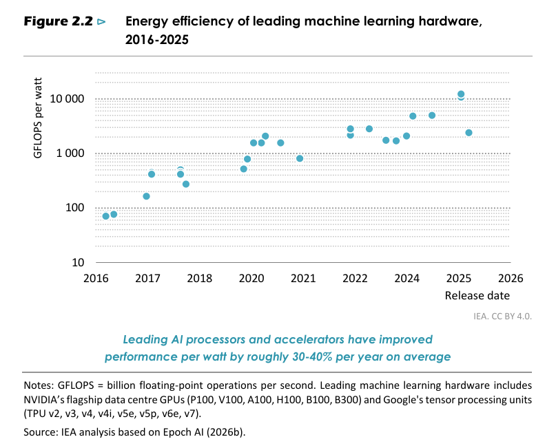
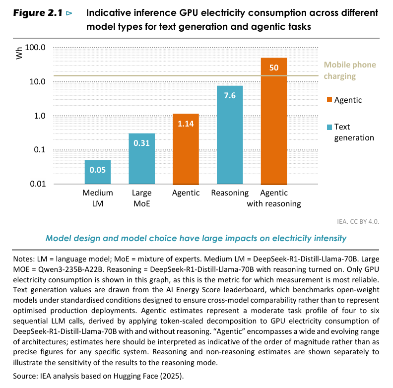

It is appropriate to preface this discussion with two considerations. First, any statement regarding AI risks becoming quickly outdated, given the remarkable pace at which these systems are developing. Second, all of us, including those who design them, possess only a limited understanding of their actual functioning. Indeed, current AI systems are more “cultivated” than “built,” for developers do not directly design every detail, but instead create a framework within which the intelligence “grows.” As a result, fundamental scientific aspects — such as the internal representations and computational processes of these systems — remain, at present, unknown. There thus emerges an urgent need for a twofold commitment: on the one hand, a deepening of scientific research; on the other, the exercise of moral and spiritual discernment.
—Pope Leo XIV, Encyclical Magnifica Humanitas, paragraph 98
Terminology
Artificial Intelligence (AI)
The term coined by "father of AI" John McCarthy in 1955 to refer to the problem of making a machine behave in ways that would be called intelligent if a human were so behaving.
Today...
This technology is rapidly evolving, and neither the scientific community nor industry agree on a common definition.
Some common definitions of AI include:
A branch of computer science dealing with the simulation of intelligent behavior in computers.
Advanced statistical and analytical methods such as machine learning and artificial neural networks, especially deep learning.
A computer system able to perform specific tasks that normally require human intelligence, such as visual perception, speech recognition, decision-making, and language translation.
—Artificial Intelligence Center of Excellence (AI CoE), AI Guide for Government
Artificial Narrow Intelligence (ANI)
Also known as weak AI or narrow AI, AI designed for specific tasks. All AI systems currently exist in this form.
Artificial General Intelligence (AGI)
A hypothetical system that can perform many, if not most, tasks associated with human-level intelligence.
Artificial Superintelligence (ASI)
The state at which AGI broadly surpasses the human capacities for cognitive tasks.
Machine Learning (ML)
A subset of AI that uses statistical methods to find patterns in large-scale data and make predictions without relying on pre-defined rules.
Inspired by the densely interconnected pathways of the human brain (but only remotely resembling the biology), the multi-layered algorithmic structure that supports deep machine learning.
Generative AI (GenAI)
AI systems that produce new content, such as text, images, music, or videos, by learning patterns from existing data.
Large Language Models (LLMs)
Deep neural networks that find the patterns of words and phrases in billions of texts. They are used by popular AI chatbots, such as ChatGPT, Claude, and Gemini, to generate the most likely sequence of words in response to a prompt.
Reasoning Model
"A category of AI model designed to engage in multi-step logical inference, exploring and evaluating multiple solution paths before producing a final output."
Agentic AI
An AI agent is an autonomous system that can break down high-level objectives into series of tasks and carry them out by selecting and leveraging external tools. The scope of possible tasks go beyond the capabilities of a more basic AI chatbot (e.g., filing expenses, making online reservations, and maintaining code).
Technocratic Paradigm
Furthermore, there is the risk of AI being used to promote what Pope Francis has called the “technocratic paradigm,” which perceives all the world's problems as solvable through technological means alone. In this paradigm, human dignity and fraternity are often set aside in the name of efficiency, “as if reality, goodness, and truth automatically flow from technological and economic power as such.”
—Dicastery for the Doctrine of the Faith & Dicastery for Culture and Education, Note Antiqua et Nova, paragraph 54
Timeline
1943: Warren McCulloch and Walter Pitts introduces the first mathematical model of a neural network at the University of Chicago
1950: Alan Turing devises in a paper what is now called the “Turing Test”
1956: John McCarthy organizes summer workshop on artificial intelligence at Dartmouth University
John McCarthy, "Father of AI"
1966: MIT computer scientist Joseph Weizenbaum creates ELIZA, the first chatbot
1974: "applied mathematician Sir James Lighthill published a critical report on academic AI research, claiming that researchers had essentially over-promised and under-delivered when it came to the potential intelligence of machines. His condemnation resulted in stark funding cuts."
1986: Ernst Dickmanns invents the first self-driving car
1996: IBM's Deep Blue wins chess
2000: Kismet, a “social robot”
2004: NASA Rovers
2011: NVIDIA GPUs for NN training
2011: Apple showcases Siri
2012: "Godfather of AI" Geoffrey Hinton and students present research on neural networks at ImageNet
2013: Hinton joins Google; Yann LeCun joins Facebook as chief AI scientist
2014: Amazon releases Alexa
2016: Hanson Robotics creates Sophia, a “human-like robot” that is granted Saudi Arabian citizenship a year later
2018: "Godfathers of Deep Learning" receive the Turing Award.
2020: OpenAI releases GPT-3
2023: Hinton resigns from Google to "speak more freely about the dangers of creating AGI
2025: Antiqua et Nova
2026: Humanitas Magnifica
People
Sister Mary Kenneth Keller
Sister Kenneth began her dissertation [24], “Inductive Inference on Computer Generated Patterns,” with the declaration, “The basic problem of this thesis is the exploration of an approach to the mechanization of inductive inference.” The idea was to automatically generate the nth mathematical expression in a series, given the first k expressions. As validation, Sister Kenneth implemented a FORTRAN program to determine the nth derivative of a function, given the first k derivatives. (She remarked that list processing languages such as LISP would have been more convenient but were not available to her.) She wanted to demonstrate that algorithms could perform tasks like differentiation through learning-by-example, rather than by a rule-based process. Although this approach was out of favor for many years, it has recently had a renaissance in so-called “deep learning models” in artificial intelligence and now dominates the field. Sister Kenneth did not claim that her “results obtained in the domain of analytic differentiation were important in themselves,” but that they demonstrated that her programs “do mechanize an inductive inference....accomplished in less than 30 seconds per problem” [24, pp. 46-47].
She concluded with her first statement on the relation between human and artificial intelligence: “The claim that this parallels the activity of the mathematician who generalizes on a symbol manipulation routine after some number of repetitions must, of course, be qualified” [24, p. 46].
The thesis was signed on May 21, 1965
Issues
What do we mean by "intelligence" itself?
In the case of humans, intelligence is a faculty that pertains to the person in his or her entirety, whereas in the context of AI, “intelligence” is understood functionally, often with the presumption that the activities characteristic of the human mind can be broken down into digitized steps that machines can replicate.
This functional perspective is exemplified by the “Turing Test,” which considers a machine “intelligent” if a person cannot distinguish its behavior from that of a human. However, in this context, the term “behavior” refers only to the performance of specific intellectual tasks; it does not account for the full breadth of human experience, which includes abstraction, emotions, creativity, and the aesthetic, moral, and religious sensibilities. Nor does it encompass the full range of expressions characteristic of the human mind. Instead, in the case of AI, the “intelligence” of a system is evaluated methodologically, but also reductively, based on its ability to produce appropriate responses—in this case, those associated with the human intellect—regardless of how those responses are generated.
AI's advanced features give it sophisticated abilities to perform tasks, but not the ability to think. This distinction is crucially important, as the way “intelligence” is defined inevitably shapes how we understand the relationship between human thought and this technology. To appreciate this, one must recall the richness of the philosophical tradition and Christian theology, which offer a deeper and more comprehensive understanding of intelligence—an understanding that is central to the Church's teaching on the nature, dignity, and vocation of the human person.
—Dicastery for the Doctrine of the Faith & Dicastery for Culture and Education, Note Antiqua et Nova, paragraphs 10-12
Ecology
Broadening our perspective to the use of AI in society, we see that it is now embedded in decision-making processes across many sectors and at multiple levels: in communication, management and control. The gains in efficiency and the potential to improve certain services are clear, yet rapidly and uncritically adopting them exposes us to a range of risks, including the tendency to overlook the environmental impact. Current AI systems require enormous amounts of energy and water, significantly influencing carbon dioxide emissions, and place heavy demands on natural resources. As their complexity increases, especially in the case of large language models, the need for computing power and storage capacity grows too, which requires an extensive network of machines, cables, data centers and energy-intensive infrastructure. For this reason, it is essential to develop more sustainable technological solutions that reduce environmental impact and help protect our common home.
—Pope Leo XIV, Encyclical Magnifica Humanitas, paragraph 101
Google reports that the median Gemini text prompt
consumes 0.24 Wh (Google, 2025b); OpenAI puts the average ChatGPT query at 0.34 Wh
(Altman, 2025); and a bottom-up estimation by Microsoft Research arrives at a median
of 0.34 Wh for frontier-scale models with over 200 billion parameters (Felipe Oviedo,
2025). These figures date from 2025 and are likely already lower.

Uses cases that "can consume hundreds or thousands of times more energy per query" (e.g., video generation and agentic tasks)

Global Electricity Consumption in 2025
Overall
All Data Centers
AI-Focused Data Centers
3%
17%
50%
Individuals and companies want to choose AI models with sustainability in mind, but currently lack the numbers they need. Imagine a little counter that tells you how much energy each one of your ChatGPT queries uses and how much carbon it emits. That could help users and companies take this into account in their everyday AI usage.
Developers need to start exposing energy and carbon footprint data directly in AI model interfaces and APIs, empowering both users and developers to make ecologically-informed choices about the AI they build and use. Code Carbon, a software package I helped develop, enables measuring energy and carbon for open-source models, but we still need buy-in from technology companies to integrate these measurements into widely-used AI tools.
—Sasha Luccioni, How to Make AI Data Centers More Sustainable
.png)


_in_1936_at_Princeton_University.jpg)


_Zunaid_Ahmed_Palak_at_Digital_World_2017_conference,_Dhaka,_Bangladesh_in_December_2017.jpg)